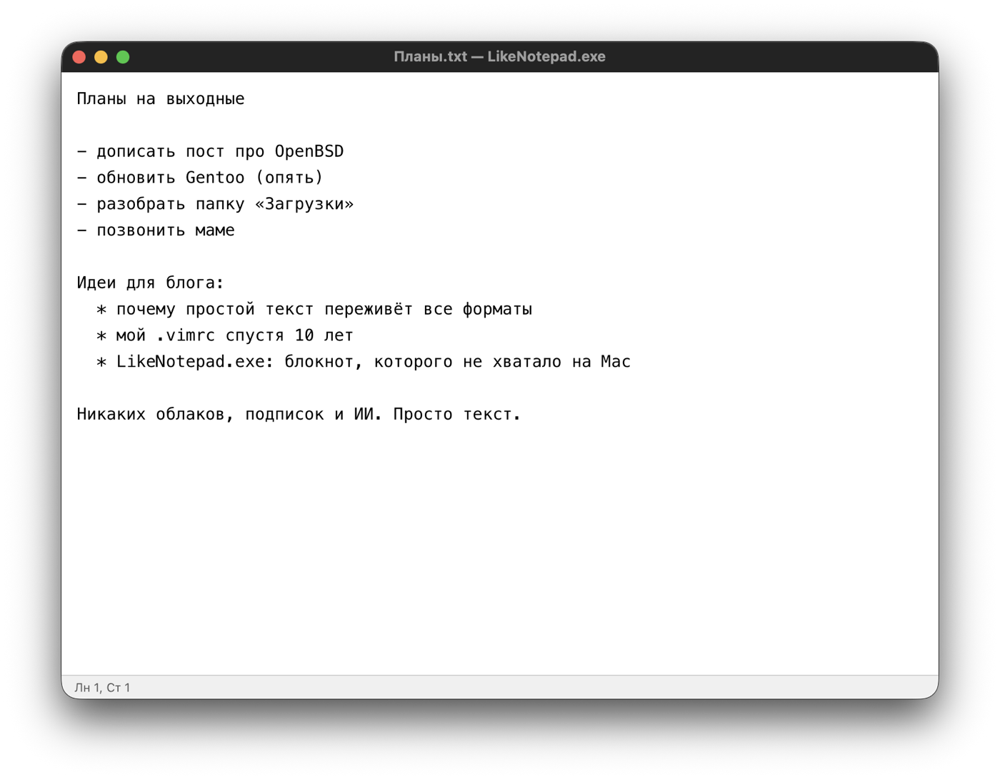
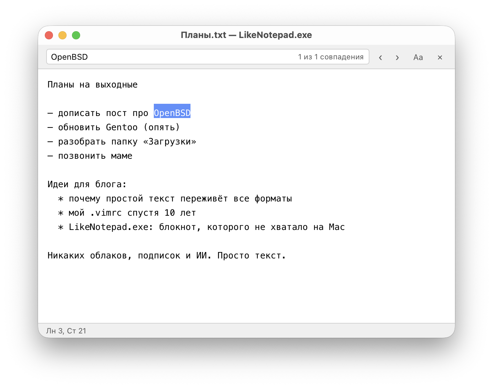
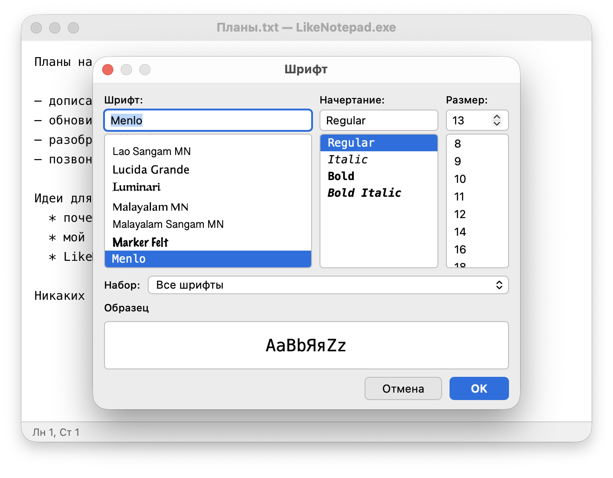

Тот самый Блокнот, но без Windows. Никаких облаков, подписок и ИИ. Просто текст.

Блокнот в Windows — программа, которая ничего не умеет, и именно поэтому ей удобно пользоваться: открыл, написал, сохранил, закрыл. На Mac для этого есть TextEdit, но он сначала делает из заметки документ RTF, а потом ещё спрашивает, в какой кодировке её сохранить. Остальные варианты — либо полноценные редакторы кода, либо заметки с синхронизацией, аккаунтом и подпиской.
LikeNotepad.exe — попытка вернуть Блокнот на Mac: те же меню, те же сочетания клавиш, простой
текст и больше ничего. .exe в названии — шутка, внутри обычное приложение для macOS.
.txt, .log, .md, .csv, .json, .xml, .ini, .conf, .cfg, .yaml. Файл можно просто перетащить на окно..LOG, при каждом открытии в конец дописывается текущее время.Чего не умеет: синхронизироваться, заводить аккаунт, собирать телеметрию и дописывать за вас текст. Это не недоработка.


Скачать последнюю версию LikeNotepad.exe (файл .dmg) — для Mac на Apple Silicon и Intel, macOS 10.15 и новее.
Или через Homebrew:
brew install --cask polatov/tap/likenotepadПриложение не подписано сертификатом Apple (он платный), поэтому при первом запуске macOS его остановит. Чтобы открыть: «Системные настройки» → «Конфиденциальность и безопасность» → внизу кнопка «Всё равно открыть». Это нужно сделать один раз.
Честно: это вайбкодинг. Код писал Claude Code, а я ставил задачи, придирался к мелочам и проверял, чтобы всё вело себя как в Блокноте. Ирония понятна: внутри приложения ИИ нет, зато при его создании ИИ было предостаточно.
Код открыт под лицензией MIT: github.com/polatov/likenotepad. Написан на Tauri 2 (Rust + WebKit). Ошибки и пожелания — в Issues на GitHub.